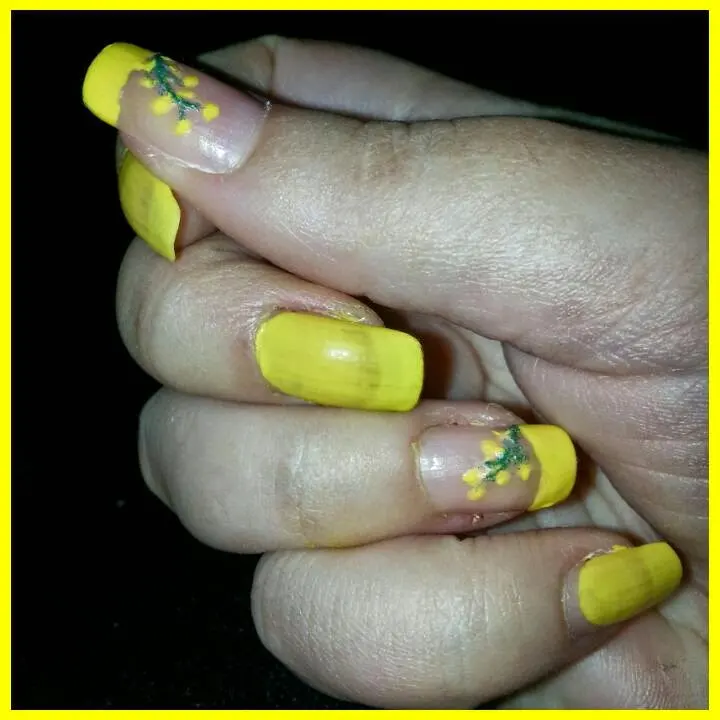

proposta nail art 8 marzo
Salve a tutti e a tutte.
Che giornata uggiosa, pioggia e vento, scusate il meteo non aveva detto che questi giorni fino al 5 ci sarebbe stato sereno???
ah beh, allora stiamo apposto ahahahah
E visto che questo tempo ci mette un pò d'angoscia mettiamo un pò di colore che dite?.
Okkeyyyy..allora vi mostro la mia proposta di marzo ispirata ovviamente all'8 maro.
Premetto che non festeggio la festa della donna:
1. perché non si è donne solo in quel giorno ma tutto l'anno.
2. perché quest'evento non dovrebbe essere un occasione per festeggiare ma bensì per ricordare i vari dramma sulla violenza sulle donne, vittime tutto l'anno. E non vi rammento la storia legata a questa data,cioè delle donne bruciste in una fabbrica, semplicemente perchè è una storia inventata. Ma poi approfondiremo, mi informerò meglio.
Torniamo alla nail art.

Ecco la mia proposta di questo mese.
Sì, non è perfetta l'ho detto anch'io..ma chissenefrega detto tutto insieme ahahahah
In realtà non sono soddisfattissima, ma mi piaceva l'idea della mimosa, quindi l'ho lasciata così.
Ho voluto appunto ricreare un qualcosa che ricordasse questo mese; e cosa c'è di meglio di una mimosa.
Ho usato:
● smalto giallo kiko.
● smalto verde glitterato (che ci sono dei glitterini mini mini bellissimi).
● top coat per finitura.
Il resto è tutta fantasia ihihihihih
Un basito a Todos :*